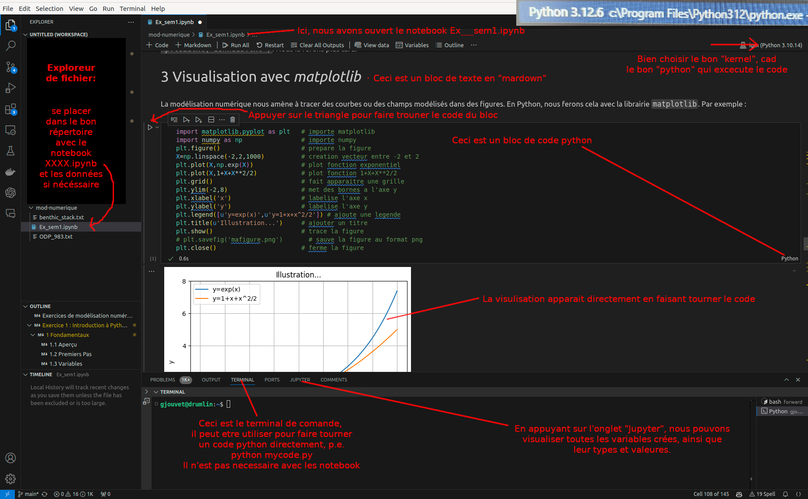
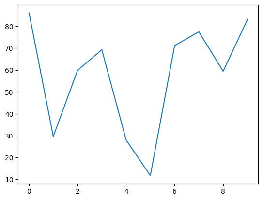
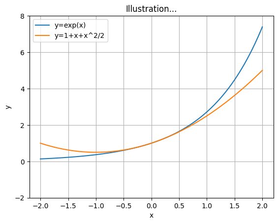
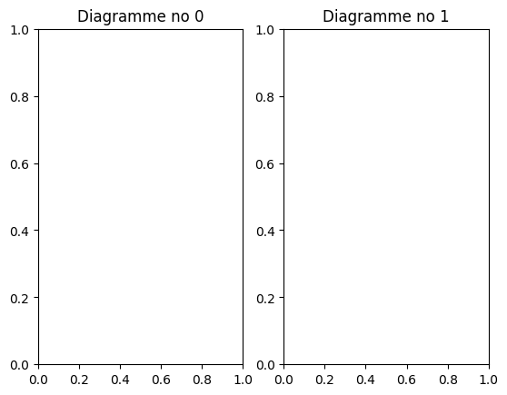
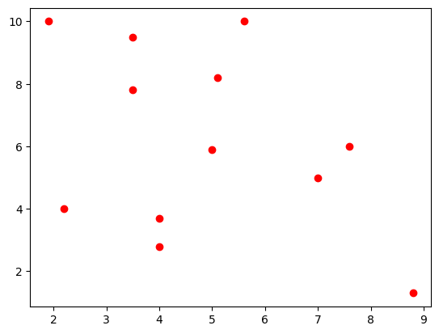
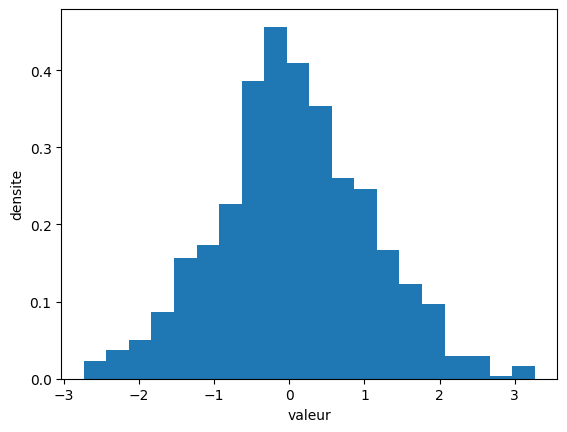
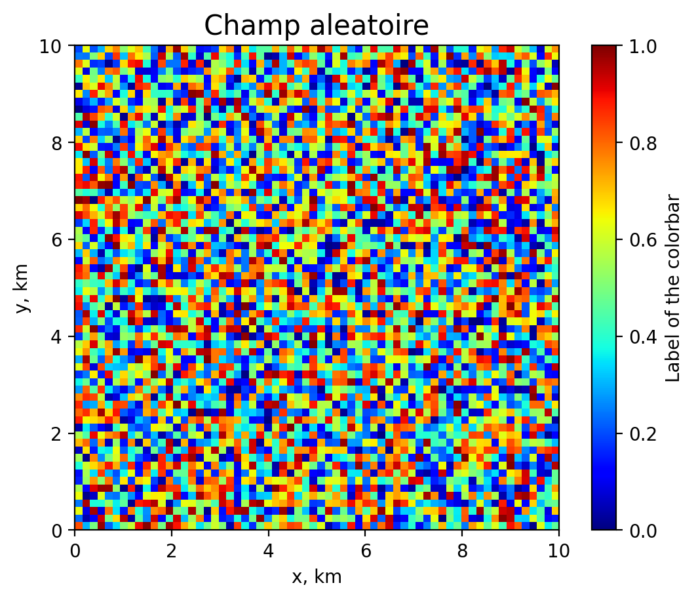
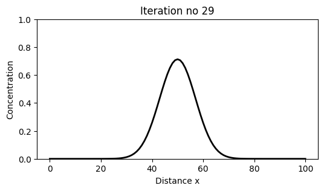
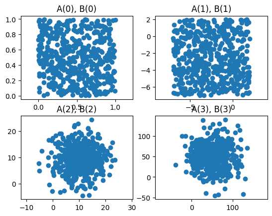
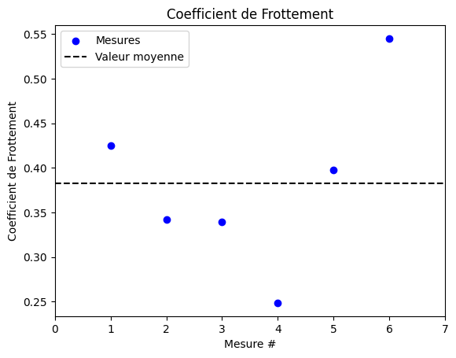

Introduction à Python#
Contenu :
Fondamentaux
Calculs matriciels (NumPy)
Visualisation (Matplotlib)
Pour aller plus loin
Exercice 1 : les générateurs aléatoires
Exercice 2 : la manipulation de vecteurs
1 Fondamentaux#
1.1 Aperçu#
Python est un langage de programmation open-source et gratuit, interprété, polyvalent et convivial. Il est largement utilisé dans le développement de logiciels, l’analyse de données, la science des données, l’apprentissage automatique, l’automatisation de tâches, et bien plus encore.
Ce tutoriel s’adresse aux étudiants du cours de modélisation numérique qui n’ont jamais utilisé Python auparavant. Le seul prérequis est une initiation élémentaire à la programmation, incluant les concepts de variable et de boucle.
Concrètement, programmer en Python revient à écrire un script (un fichier texte éditable avec l’extension .py, par exemple monScript.py, qui contient une suite de commandes) et à l’exécuter dans un terminal avec la commande :
python monScript.py
à condition que Python et les bibliothèques appelées dans le script soient bien installés.
Dans ce cours, nous utiliserons plutôt des Jupyter Notebooks (par exemple monNotebook.ipynb), qui permettent d’alterner des blocs de texte (écrits en Markdown, incluant des équations, des images, etc.) et des blocs de code Python exécutables : c’est exactement le format de ce document. Il reste bien sûr possible de placer le même code dans un script et de l’exécuter comme ci-dessus.
VS Code est un environnement de développement populaire (pour Python et bien d’autres langages), qui fournit une interface graphique. Nous l’utiliserons pour éditer les notebooks, les exécuter et visualiser les résultats facilement. L’installation de VS Code et de Python est décrite dans la page Installer VS Code + Python.
Avant toute chose, il est important de se placer dans un répertoire dédié : le répertoire courant de VS Code est affiché en haut à gauche, et c’est dans celui-ci que VS Code lit et écrit les données.

Sur cette figure, nous voyons plusieurs fenêtres :
l’explorateur de fichiers à gauche, où apparaissent le notebook et les fichiers de données ;
le notebook, composé de blocs de texte (Markdown) et de code (Python), chacun pouvant être exécuté en appuyant sur le triangle ▶ ;
la fenêtre du bas offre un terminal, utile si l’on souhaite exécuter un script Python ; elle permet aussi d’explorer les valeurs des variables en mémoire en appuyant sur Jupyter.
⚠️ Attention : avant d’exécuter un bloc de code, il est primordial de sélectionner le kernel (en haut à droite de la figure). Le kernel est l’interpréteur qui exécute le code : on peut y sélectionner une autre version de Python (ou une version personnalisée avec certaines bibliothèques), voire un autre langage de programmation.
1.2 Premiers Pas#
Python fonctionne comme une calculatrice : on peut y effectuer toutes les opérations mathématiques souhaitées et afficher le résultat avec la fonction print :
print(1+2*90/3-4)
57.0
Notons que l’opérateur ** est la puissance, // est la division euclidienne, et % est le reste de la division :
print(2**3,10//3,10%3)
8 3 1
En Python, les commentaires sont indiqués par le signe # : tout ce qui suit # n’est pas interprété. Ils peuvent occuper une ligne complète ou suivre du code.
Commenter un code est essentiel pour que d’autres (et vous-même, quelques mois plus tard !) puissent en comprendre le sens. Prenez donc le temps de documenter généreusement votre code.
# cette ligne est commentée, elle ne sera pas exécutée
print(10) # cette ligne n'est pas commentée
10
1.3 Variables#
En Python, on peut définir des variables, qui peuvent avoir plusieurs types différents : entier (int), nombre à virgule (float), chaîne de caractères (str) ou booléen (bool). On assigne une valeur via le symbole =, on peut vérifier sa valeur via la fonction print, et son type via la fonction type :
var1=10
var2=3.5
var3="Python"
var4=True
print("valeurs des variables:",var1,var2,var3,var4)
print("types des variables:",type(var1),type(var2),type(var3),type(var4))
valeurs des variables: 10 3.5 Python True
types des variables: <class 'int'> <class 'float'> <class 'str'> <class 'bool'>
Le nom d’une variable est sensible à la casse (T et t sont deux variables différentes), peut être aussi long qu’on le souhaite, et peut contenir des chiffres — à l’exception du premier caractère.
On peut faire bon nombre d’opérations sur les variables, par exemple :
print(var1+var2*var1) # operation algebrique
print(var3+var3) # operation sur les chaines de caracteres
print(var4 and not True) # operation logique
45.0
PythonPython
False
Un booléen est une variable qui vaut vrai (True) ou faux (False), à laquelle on peut appliquer les opérateurs and, or et not :
b = True
print(not b or (b and not b)) # donnera False
False
Enfin, il est très commode d’utiliser les opérateurs d’incrémentation +=, -=, *= et /=, qui reviennent à mettre à jour une variable à partir de sa propre valeur :
n = 8
n += 1 # equivalent a : n = n + 1
print(n)
n *= 2 # equivalent a : n = n * 2
print(n)
9
18
1.4 Les Listes#
Les listes sont des éléments importants en Python. Elles sont définies avec des crochets [] et peuvent être constituées de tous les types d’objets.
list1=[3,5,6,True]
On accède à la longueur d’une liste avec la fonction len :
print(len(list1))
4
On accède à un élément ou à une sous-liste en utilisant [] :
print(list1[0]) # Extraire le premier élément
print(list1[0:2]) # Extraire les 2 premiers éléments
print(list1[-1]) # Extraire le dernier élément
print(list1[-3:]) # Extraire les 3 derniers éléments
3
[3, 5]
True
[5, 6, True]
⚠️ Attention : en Python, les indices vont de
0àlen(list1)-1.
⚠️ Attention : pour manipuler des vecteurs et des matrices (essentiels dans ce cours), nous n’utiliserons pas les listes, mais la bibliothèque
numpy(section 2), dont l’utilisation est similaire.
Les chaînes de caractères (str) peuvent aussi être vues comme des listes de caractères :
chaine1="Python_pour_le_data_scientist"
Une chaîne de caractères est en fait une liste spécifique dans laquelle chaque élément est un caractère :
print(chaine1[:6])
print(chaine1[-14:])
print(chaine1[15:20])
Python
data_scientist
data_
1.5 Fonctions prédéfinies et aide#
Python dispose d’un certain nombre de fonctions prédéfinies :
print(max(1,2))
l = [1,2,3,4,5]
print(max(l), min(l), sum(l))
print(int(3.5)) # donnera 3, la partie entiere de 3.5
2
5 1 15
3
Vous pouvez accéder à l’aide de chaque fonction Python en utilisant :
help(sum)
Help on built-in function sum in module builtins:
sum(iterable, /, start=0)
Return the sum of a 'start' value (default: 0) plus an iterable of numbers
When the iterable is empty, return the start value.
This function is intended specifically for use with numeric values and may
reject non-numeric types.
1.6 Clauses conditionnelles : if, elif, else#
Il est souvent nécessaire d’utiliser des clauses conditionnelles lors de la construction d’un modèle. Par exemple : si la température à la surface d’un glacier dépasse 0°C, alors la glace fond. Les conditions sont simples à mettre en place en Python. Il faut toutefois respecter l’indentation, c’est-à-dire décaler les blocs de commandes conditionnelles avec des espaces :
a=True
if a:
print("c'est vrai")
c'est vrai
En Python, la syntaxe est fixée par l’indentation.
Tout nouveau bloc d’instructions nécessite une indentation supplémentaire, et ce bloc prend fin lorsque cette indentation disparaît. Le nombre d’espaces utilisés n’a pas d’importance ; il faut juste toujours utiliser le même nombre au sein d’un même bloc d’instructions.
# on ajoute une alternative
if a:
print("c'est vrai")
else:
print("ce n'est pas vrai")
c'est vrai
a = True
if a is True :
print("c'est vrai")
elif a is False :
print("c'est faux")
else :
print("ce n'est pas un booléen")
c'est vrai
Les conditions testées par les clauses font appel aux opérateurs relationnels :
<signifie plus petit que,<=signifie plus petit ou égal à ;>signifie plus grand que,>=signifie plus grand ou égal à ;==signifie égal à,!=signifie différent de.
Notez bien que le double == indique une comparaison entre deux valeurs (a==b : a est-il égal à b ?), et non pas l’attribution d’une valeur à une variable, qui se fait avec le simple = (a=b : a se voit attribuer la valeur de b).
Les clauses peuvent enchaîner plusieurs conditions avec if (si condition particulière), elif (sinon et si condition particulière) et else (sinon) ; else peut être omis.
a=50
if a<25 :
print("a est inferieur a 25")
else :
print("a est superieur a 25")
a est superieur a 25
1.7 Les Boucles : for, while#
Un modèle numérique basé sur des équations discrétisées dans le temps utilise une boucle pour itérer d’un pas de temps au suivant : dans le cas d’une discrétisation explicite du temps, la boucle est incontournable. En revanche, il est souvent possible d’éviter une boucle pour la discrétisation dans l’espace, au profit d’un calcul direct vectoriel / matriciel (section 2). Cette dernière option est bien plus rapide et est appelée opération vectorisée, dans la mesure où elle s’applique au vecteur / à la matrice entière.
Comme pour les clauses conditionnelles, il est indispensable d’utiliser une indentation pour délimiter le bloc d’instructions qui est itéré dans la boucle.
La boucle for itère sur les éléments d’un objet. Avec une liste, on a :
for e in [1, 2]:
print(e)
1
2
La fonction range() permet de générer une suite d’entiers : range(n) contient les nombres de 0 à n-1, et range(m,n) contient les nombres de m à n-1.
print(list(range(5))) # en commençant de 0
print(list(range(2,5))) # en commençant de 2
print(list(range(2,15,2))) # chaque 2 entiers
[0, 1, 2, 3, 4]
[2, 3, 4]
[2, 4, 6, 8, 10, 12, 14]
Pour générer une boucle sur les entiers de 0 à 9, on utilise :
for i in range(10) :
print(i)
0
1
2
3
4
5
6
7
8
9
Attention, Python commence la numérotation à partir de 0, et la dernière valeur est toujours exclue !
La boucle while, qui itère tant qu’une condition est remplie, a un fonctionnement classique en Python :
i=1
val_stop=50
while i<100 :
i+=1 # cette ligne est équivalente à i=i+1, elle permet d'incrémenter i par 1
if i>val_stop :
break # break permet de sortir de la boucle
print(i)
51
Le mot-clé
breakpermet la sortie prématurée d’une boucle.
On peut aussi imbriquer des boucles et des conditions, en ajoutant un niveau d’indentation à chaque fois :
for i in range(3):
for j in range(4):
print(i,j)
0 0
0 1
0 2
0 3
1 0
1 1
1 2
1 3
2 0
2 1
2 2
2 3
for i in range(5):
j = 0
while j<600:
if i + j == 15:
print('la condition i + j == 15 est remplie pour i =', i, 'et j =', j)
break # cela sort prematurement de la boucle while
j += 1
la condition i + j == 15 est remplie pour i = 0 et j = 15
la condition i + j == 15 est remplie pour i = 1 et j = 14
la condition i + j == 15 est remplie pour i = 2 et j = 13
la condition i + j == 15 est remplie pour i = 3 et j = 12
la condition i + j == 15 est remplie pour i = 4 et j = 11
⚠️ Attention : oublier le symbole
:ou se tromper dans l’indentation est une source d’erreur classique.
1.8 Les fonctions#
ℹ️ Note : nous n’utiliserons pas les fonctions dans ce cours. Il s’agit toutefois d’une notion importante de Python, c’est pourquoi elle est rappelée ici ; mais il n’est pas nécessaire de l’utiliser pour suivre le cours et faire les exercices.
Il est très simple de définir des fonctions en Python :
def ma_fonc(a,b) :
print(a+b)
# on peut appeler une fonction de manières différentes
ma_fonc(a=4, b=6)
ma_fonc(4,6)
ma_fonc(b=6, a=4)
10
10
10
Une fonction peut avoir plusieurs sorties/outputs, retournées avec le mot-clé return :
def ma_fonc(a, b) :
return a+b, a-b
val1, val2=ma_fonc(2,5)
print(val1, val2)
7 -3
Une fonction s’arrête dès qu’elle rencontre un return : les instructions qui suivent ne sont pas exécutées. On peut donc avoir plusieurs return dans une même fonction :
def f(n):
if n<1:
return 0, 0
elif n<4:
return 2*n+1, 2*n-1
else:
return n, -n
a, b = f(3)
print(a,b) # retournera 7 5
7 5
1.9 Modules#
Il existe un très grand nombre d’outils (appelés modules ou bibliothèques) que les utilisateurs peuvent installer, charger/importer (via la commande import), et utiliser. Par exemple :
import datetime # Permet d'importer le module datetime, qui permet d'obtenir l'heure et la date
print(datetime.date.today())
2026-08-05
import math # permet d'importer le module math, qui permet de faire des calculs mathématiques
print(math.pi) # retournera 3.141592653589793
3.141592653589793
import numpy as np # permet d'importer le module numpy, qui permet de faire du calcul matriciel
A= np.ones((3,4)) # cela créera une matrice de 3 lignes et 4 colonnes, remplie de 1
B= np.zeros((3,4)) # cela créera une matrice de 3 lignes et 4 colonnes, remplie de 0
print(A+B)
[[1. 1. 1. 1.]
[1. 1. 1. 1.]
[1. 1. 1. 1.]]
import matplotlib.pyplot as plt # permet de faire des graphiques
import numpy as np
X = np.random.uniform(10,100,(10))
plt.plot(X)
[<matplotlib.lines.Line2D at 0x767ebdbc8100>]

On donne souvent des noms courts (des alias) aux bibliothèques par simplicité, et pour s’économiser des lignes de code.
import numpy as np # dans ce cas, nous appelons le module numpy et lui donnons un alias np
Une grande force de Python (et la raison de son succès) vient du nombre considérable de bibliothèques développées par la communauté. Par exemple :
scipyest une bibliothèque scientifique : algèbre linéaire, fonctions spéciales, analyse de Fourier, etc. ;scikit-learn,tensorflow,pytorchpermettent de faire de l’apprentissage automatique (IA) ;geopandas,rasterio,netcdf4sont des outils d’information géographique ;OpenCVpermet de faire de l’analyse d’image ;igm(github.com/jouvetg/igm) — développé ici à la FGSE — permet de modéliser les glaciers.
Dans ce cours, nous n’utiliserons que les bibliothèques
numpy,mathetmatplotlib. Elles sont installées par défaut sur les machines de l’UNIL ; sur votre machine personnelle, voir la page Installer VS Code + Python.
2 Calculs matriciels avec numpy#
L’élément de base pour le cours de modélisation numérique est une matrice de dimension \(n \times m\) composée de valeurs numériques (\(n\) = lignes, \(m\) = colonnes). Une matrice de dimension \(1 \times 1\) représente donc un scalaire, et une matrice de dimension \(n \times 1\) est un vecteur colonne de dimension \(n\) (de même, un vecteur ligne est une matrice \(1 \times m\)).
En Python, la gestion des matrices et des calculs que l’on peut faire dessus se fait via la bibliothèque numpy.
2.1 Creation de matrices (array) numpy#
On commence par importer la bibliothèque NumPy :
import numpy as np
Ensuite, nous allons créer des vecteurs array avec NumPy en 1D. Tout cela sera ensuite généralisé en 2D, 3D, … nD.
array_de_liste=np.array([1,4,7,9]) # on crée un tableau à partir d'une liste
print(array_de_liste)
[1 4 7 9]
array_range=np.arange(10) # on crée un tableau de 0 à 9
print(array_range)
[0 1 2 3 4 5 6 7 8 9]
array_linspace=np.linspace(0,1,20) # entre 0 et 1, avec 20 valeurs
print(array_linspace)
[0. 0.05263158 0.10526316 0.15789474 0.21052632 0.26315789
0.31578947 0.36842105 0.42105263 0.47368421 0.52631579 0.57894737
0.63157895 0.68421053 0.73684211 0.78947368 0.84210526 0.89473684
0.94736842 1. ]
array_ones=np.ones(4) # un tableau de 1 avec 4 éléments
print(array_ones)
[1. 1. 1. 1.]
Pour passer à deux dimensions, on utilise une liste de listes (décrite ligne par ligne), ou les constructeurs de matrices élémentaires :
O=np.array([[0,1,2],[3,4,5],[6,7,8]]) # creation matrice 2D de dim (3,3)
print('O= ',O)
A = np.zeros((3,3)) # creation matrice 2D de dim (3,3) de zeros
print('A= ',A)
B = np.ones((2,2)) # creation matrice 2D de dim (2,2) de uns
print('B= ',B)
C = np.eye((10)) # creation matrice 2D de dim (10,10) diagonale de un
print('C= ',C)
D = np.arange(10) # creation vecteur [0,1,...,9]
print('D= ',D)
E = np.linspace(0,1,11) # creation vecteur [0,0.1,...,1]
print('E= ',E)
O= [[0 1 2]
[3 4 5]
[6 7 8]]
A= [[0. 0. 0.]
[0. 0. 0.]
[0. 0. 0.]]
B= [[1. 1.]
[1. 1.]]
C= [[1. 0. 0. 0. 0. 0. 0. 0. 0. 0.]
[0. 1. 0. 0. 0. 0. 0. 0. 0. 0.]
[0. 0. 1. 0. 0. 0. 0. 0. 0. 0.]
[0. 0. 0. 1. 0. 0. 0. 0. 0. 0.]
[0. 0. 0. 0. 1. 0. 0. 0. 0. 0.]
[0. 0. 0. 0. 0. 1. 0. 0. 0. 0.]
[0. 0. 0. 0. 0. 0. 1. 0. 0. 0.]
[0. 0. 0. 0. 0. 0. 0. 1. 0. 0.]
[0. 0. 0. 0. 0. 0. 0. 0. 1. 0.]
[0. 0. 0. 0. 0. 0. 0. 0. 0. 1.]]
D= [0 1 2 3 4 5 6 7 8 9]
E= [0. 0.1 0.2 0.3 0.4 0.5 0.6 0.7 0.8 0.9 1. ]
Ce formalisme est particulièrement pratique pour créer des matrices de grandes dimensions.
Nous pouvons également créer des matrices en 3D, 4D, … (aussi appelées tenseurs), mais nous ne les utiliserons pas dans le cours.
2.2 Forme (shape) d’un array numpy#
La dimension (taille) d’une matrice est une donnée essentielle ; cela s’appelle forme / shape. La forme possède un indice pour un vecteur et deux indices pour une matrice :
import numpy as np
A = np.array([0,1,2])
print(np.shape(A))
B = np.array([[0,1,2],[3,4,5],[6,7,8]])
print(np.shape(B))
C = np.eye((10))
print(np.shape(C))
(3,)
(3, 3)
(10, 10)
En prenant la transposée d’une matrice, la forme \((a,b)\) devient \((b,a)\) :
F = np.zeros((2,5))
print("shape de F :", np.shape(F))
G = np.transpose(F) # on peut aussi ecrire F.T
print("shape de F.T:", np.shape(G))
shape de F : (2, 5)
shape de F.T: (5, 2)
2.3 Accés indices, slicing, incrémentation#
Comme pour les listes, on accède à un élément d’un tableau avec les crochets. Les indices vont toujours de 0 à n-1, où n est la taille de la dimension spécifiée par la forme du tableau (shape).
Pour un tableau à plusieurs dimensions, on utilise plusieurs indices dans les crochets : Z[0] représente la première ligne (ligne 0) de Z, tandis que Z[0, 0] correspond à l’élément à la position (0, 0), c’est-à-dire à la première ligne (ligne 0) et à la première colonne (colonne 0).
import numpy as np
B = np.array([[0,1,2],[3,4,5],[6,7,8]])
print("ligne 1 et colonne 1: ", B[1,1])
print("ligne 1: ",B[1,:])
print("lignes 1 et 2 et les colonnes 0 et 1 :", B[1:,0:2])
ligne 1 et colonne 1: 4
ligne 1: [3 4 5]
lignes 1 et 2 et les colonnes 0 et 1 : [[3 4]
[6 7]]
On peut pointer sur l’élément d’un vecteur par un indice positif en partant du début, ou par un indice négatif en partant de la fin :
Indices -> 0 1 2 3 4 5 6 7 8 9
Vecteur = [3, 2, 8, 1, 3, 5, 2, 7, 1, 9]
Indices -> -10 -9 -8 -7 -6 -5 -4 -3 -2 -1
Il est ainsi possible d’extraire une sous-matrice en sélectionnant les indices en partant du début et/ou de la fin. Par exemple, cette ligne tronque les 2 premiers et les 3 derniers éléments :
E = np.array([0,1,2,3,4,5,6,7,8,9])
print(E[2:-3])
[2 3 4 5 6]
Il est également possible de ne garder qu’un élément sur X avec l’opérateur ::. Par exemple, la commande suivante ne garde que les éléments à chaque 3e position :
E = np.array([0,1,2,3,4,5,6,7,8,9])
print(E[::3]) # affiche un élément sur 3
[0 3 6 9]
Nous pouvons également changer des éléments d’une matrice en utilisant le même formalisme :
B = np.array([[0,1,2],[3,4,5],[6,7,8]])
print("avant :",B)
B[1,1] = 10
B[2,:] = 0
print("apres :",B)
avant : [[0 1 2]
[3 4 5]
[6 7 8]]
apres : [[ 0 1 2]
[ 3 10 5]
[ 0 0 0]]
2.4 Opérations#
Les opérations sur les tableaux (arrays) sont des opérations terme à terme :
arr1=np.array([1,4,9,5])
arr2=np.ones(4)
print(arr1+arr2)
[ 2. 5. 10. 6.]
Lors d’une opération matricielle, les matrices doivent être de dimensions cohérentes. Ainsi, on ne peut pas faire la somme des tableaux suivants, car ils n’ont pas les mêmes dimensions :
arr1=np.array([1,4])
arr2=np.ones(4)
print(arr1+arr2)
cela donnerait une erreur, car le premier a une shape de (2,) et le deuxième de (4,).
Les opérations algébriques usuelles ainsi que les fonctions NumPy peuvent être appliquées directement sur un tableau et sont effectuées terme à terme, et ce, de manière beaucoup plus rapide qu’en faisant une boucle sur tous les éléments du tableau. Par exemple :
X = np.zeros(3)
Y = np.ones(3)
print(X)
print(Y)
print(X + 2*Y) # multiplication et addition elt par elt
print(X - X/Y) # division et soustraction elt par elt
[0. 0. 0.]
[1. 1. 1.]
[2. 2. 2.]
[0. 0. 0.]
L’opérateur * effectue la multiplication terme à terme. Le produit scalaire entre deux vecteurs, le produit matrice-vecteur et le produit matriciel se font avec l’opérateur @ (ou np.dot) :
A = np.array([[0,-1,-2],[-3,-4,-5],[-6,-7,-8]])
B = np.array([[0,1,2],[3,4,5],[6,7,8]])
V = np.array([-4,0,4])
print("produit terme a terme : ", A * B) # produit terme a terme
print("produit matriciel : ", np.dot(A,B)) # produit matriciel (equivalent a A @ B)
print("produit matrice-vecteur : ", np.dot(A,V))
produit terme a terme : [[ 0 -1 -4]
[ -9 -16 -25]
[-36 -49 -64]]
produit matriciel : [[ -15 -18 -21]
[ -42 -54 -66]
[ -69 -90 -111]]
produit matrice-vecteur : [-8 -8 -8]
Le module NumPy fournit une liste de fonctions usuelles en mathématiques : sqrt, exp, cos, sin, log, log2, log10, floor, ceil, round, etc. :
print(np.exp(1.0), np.sin(np.pi/2))
print(np.log(np.exp(1)), np.sqrt(2))
print(np.floor(1.3), np.ceil(3.4))
2.718281828459045 1.0
1.0 1.4142135623730951
1.0 4.0
et ceci s’applique bien sûr matriciellement :
print(np.exp(A))
print(np.cos(B))
[[1.00000000e+00 3.67879441e-01 1.35335283e-01]
[4.97870684e-02 1.83156389e-02 6.73794700e-03]
[2.47875218e-03 9.11881966e-04 3.35462628e-04]]
[[ 1. 0.54030231 -0.41614684]
[-0.9899925 -0.65364362 0.28366219]
[ 0.96017029 0.75390225 -0.14550003]]
2.5 Nombres aléatoires#
NumPy possède un module spécifique pour ce type de fonctions : il s’agit de np.random. Ce sont des fonctions très utiles pour modéliser des systèmes naturels ayant des caractéristiques d’apparence aléatoire, par exemple le déclenchement de glissements de terrain dans un paysage.
La fonction np.random.uniform(x, y, (a, b)) génère une matrice de a lignes et b colonnes remplie de nombres aléatoires distribués uniformément entre x et y :
# vecteur de 10 nb aleatoires entre 0 et 1
x_alea1 = np.random.uniform(0,1,10)
print(x_alea1)
# matrice de 5x10 nb aleatoires entre -3 et 2
x_alea2 = np.random.uniform(-3,2,(5,10))
print(np.shape(x_alea2))
[0.45320479 0.64049907 0.47901498 0.53791961 0.98086186 0.09132491
0.00604515 0.05004318 0.49244671 0.18545095]
(5, 10)
La fonction np.random.normal(m, s, (a, b)) génère une matrice de a lignes et b colonnes remplie de nombres aléatoires distribués normalement autour de la moyenne m avec un écart-type s (cliquez plusieurs fois pour obtenir plusieurs réalisations) :
print(np.random.normal(4,5)) # loi normale de moyenne 4 et d'ecart-type 5
# matrice de 3x4 nb aleatoires distr. normalement, de moyenne 8 et d'ecart-type 2
print(np.random.normal(8,2,(3,4)))
-5.8982259768401235
[[ 8.22346671 7.14447363 6.63786864 6.77885706]
[11.38955926 8.33758371 7.9839593 7.2470513 ]
[ 5.0251713 7.99190811 6.47806861 6.43811932]]
Pour générer une matrice de taille 2x2 de nombres aléatoires entre 0 et 1 issus d’une loi uniforme, on utilise :
print(np.random.random(size=(2,2)))
[[0.11981237 0.49746277]
[0.05037446 0.87295039]]
Pour générer un vecteur de 10 entiers compris entre 0 et 4, on utilise :
print(np.random.randint(0,5,size=10))
[1 2 0 1 1 4 3 1 4 4]
Il existe aussi d’autres fonctions qui font la même chose :
print(np.random.rand()) # uniforme entre 0 et 1
print(np.random.randn()) # normale centree d'ecart-type 1
0.7659930131002896
0.9942526365849117
2.6 Importer des données à partir d’un fichier#
Il est fréquent de devoir lire des données mesurées stockées dans un fichier texte. Supposons que l’on dispose d’un fichier donnees.txt contenant une liste de chiffres sur deux lignes :
1. 2.3 9.8 -5.9 3.1 4. -8.7 0.6
12. -7. -3.5 0.1 6. 7.4 -3.3 7.
On l’importe avec la commande np.loadtxt :
X = np.loadtxt('donnees.txt')
print(X)
print("shape :", np.shape(X))
[[ 1. 2.3 9.8 -5.9 3.1 4. -8.7 0.6]
[12. -7. -3.5 0.1 6. 7.4 -3.3 7. ]]
shape : (2, 8)
Comme le fichier contient deux lignes, on peut aussi les récupérer directement dans deux vecteurs distincts :
X, Y = np.loadtxt('donnees.txt')
print("X =", X)
print("Y =", Y)
X = [ 1. 2.3 9.8 -5.9 3.1 4. -8.7 0.6]
Y = [12. -7. -3.5 0.1 6. 7.4 -3.3 7. ]
⚠️ Attention : assurez-vous que le fichier
donnees.txtse trouve bien dans le répertoire courant (celui affiché en haut à gauche de VS Code), sinon Python ne le trouvera pas.
Notons que l’opération inverse, l’écriture d’une matrice dans un fichier texte, se fait avec np.savetxt('mon_fichier.txt', X). Ces commandes ne sont pas exécutées ici, faute de fichier de données ; nous les utiliserons le moment venu dans les exercices du cours.
2.7 La fonction np.copy#
Lorsque l’on crée un objet A qui est un numpy array, A pointe en fait sur l’espace mémoire où est stocké l’objet. De fait, si l’on définit un objet B avec B=A, B n’est qu’une copie de l’adresse de A : si l’on modifie B, totalement ou partiellement, A sera également modifié !
A = np.array([1,2,3])
B = A # B pointe sur le meme espace memoire que A
B[0] = 100 # on modifie B ...
print("A =", A) # ... et A a change aussi !
A = [100 2 3]
Ce comportement propre à Python (qui gère des adresses) peut générer des problèmes inattendus. Il est toutefois possible de créer une copie physique B d’un objet A déjà défini avec la commande B=np.copy(A). Une fois cette copie réalisée, toute modification de B ne causera aucun changement sur A, car il ne s’agit plus du même objet :
A = np.array([1,2,3])
B = np.copy(A) # copie physique de A
B[0] = 100 # on modifie B ...
print("A =", A) # ... et A est inchange
A = [1 2 3]
3 Visualisation avec matplotlib#
3.1 Visualisation non-interactive#
La modélisation numérique nous amène à tracer des courbes ou des champs modélisés dans des figures. En Python, nous ferons cela avec la bibliothèque matplotlib. Par exemple :
import matplotlib.pyplot as plt # importe matplotlib
import numpy as np # importe numpy
plt.figure() # prepare la figure
X=np.linspace(-2,2,1000) # creation vecteur entre -2 et 2
plt.plot(X,np.exp(X)) # trace la fonction exponentielle
plt.plot(X,1+X+X**2/2) # trace la fonction 1+X+X**2/2
plt.grid() # fait apparaitre une grille
plt.ylim(-2,8) # met des bornes a l'axe y
plt.xlabel('x') # labelise l'axe x
plt.ylabel('y') # labelise l'axe y
plt.legend([u'y=exp(x)',u'y=1+x+x^2/2']) # ajoute une legende
plt.title(u'Illustration...') # ajoute un titre
plt.show() # affiche la figure
# plt.savefig('mafigure.png') # sauve la figure au format png
plt.close() # ferme la figure

La fonction plt.plot(X, Y) permet de tracer une courbe à partir d’un vecteur X et d’un vecteur Y — attention, les deux doivent avoir la même taille. Elle possède un bon nombre d’options (taille et type du trait, présence de marqueurs, couleur, etc.) : consultez l’aide avec help(plt.plot) pour plus d’informations.
La fonction plt.subplot(m, n, k) découpe une même fenêtre graphique en un tableau de m × n cases et insère les instructions de type plt. qui suivent dans la k-ième case. Par exemple :
import matplotlib.pyplot as plt
plt.figure()
plt.subplot(1,2,1)
plt.title(u'Diagramme no 0')
plt.subplot(1,2,2)
plt.title(u'Diagramme no 1')
plt.show()

Si X et Y sont deux listes ou tableaux de nombres réels et de même longueur, alors plt.scatter(X, Y) trace le nuage de points (X[0], Y[0]), (X[1], Y[1]), …, (X[n-1], Y[n-1]). Par exemple :
import matplotlib.pyplot as plt
X=[5.6,5,3.5,7.6,2.2,4,1.9,8.8,7,5.1,3.5,4]
Y=[10,5.9,7.8,6,4,3.7,10,1.3,5,8.2,9.5,2.8]
plt.scatter(X,Y,color='r')
<matplotlib.collections.PathCollection at 0x767ebd007550>

Si X est une liste ou un tableau de nombres réels, alors plt.hist(X, bins=c, density=True) construit un histogramme des valeurs de X ayant c classes (par défaut c = 10) :
X = np.random.normal(0,1,1000) # 1000 tirages d'une loi normale centree reduite
plt.hist(X, bins=20, density=True)
plt.xlabel('valeur')
plt.ylabel('densite')
plt.show()

Enfin, la fonction plt.imshow permet de dessiner un champ 2D à partir d’une matrice (numpy array), prise aléatoirement ici. Quelques options seront très utilisées dans ce cours :
origin='lower'place l’origine \((0,0)\) en bas à gauche. Par défaut,imshowla place en haut à gauche (convention des matrices, dont la ligne 0 est en haut), ce qui revient à afficher le champ retourné verticalement ;extent=[xmin, xmax, ymin, ymax]donne les bornes physiques des axes, au lieu des indices de la matrice ;vminetvmaxfixent les bornes de la palette de couleurs : c’est indispensable pour comparer plusieurs instants d’une même simulation, sinon l’échelle change à chaque image ;cmapchoisit la palette de couleurs ('jet','viridis','terrain','Blues', …) ;ax.axis('off')masque les axes, etax.set_aspect('equal')conserve les proportions.
import matplotlib.pyplot as plt
fig = plt.figure(dpi=200) # creation figure
ax = fig.add_subplot(1, 1, 1) # creation axes
ax.set_aspect("equal") # on garde les proportions
im = ax.imshow(np.random.random(size=(64,64)), # le champ 2D a afficher
origin='lower', # l'origine (0,0) est en bas a gauche
extent=[0, 10, 0, 10], # bornes physiques des axes, en km
cmap='jet', # palette de couleurs
vmin=0, vmax=1) # bornes de la palette de couleurs
ax.set_title("Champ aleatoire", size=15) # on met un titre
ax.set_xlabel('x, km')
ax.set_ylabel('y, km')
cbar = plt.colorbar(im, label='Label of the colorbar') # on ajoute une colorbar

3.2 Visualisation interactive#
Très souvent, lorsque nous implémentons un modèle d’évolution, il est commode de visualiser les résultats de manière dynamique, c’est-à-dire que la solution évolue avec le temps, permettant ainsi une visualisation réaliste du phénomène étudié. Cela nécessite quelques modifications dans le code pour que VS Code puisse afficher le résultat en temps réel. Pour ce faire, il nous faut appeler la bibliothèque IPython, qui permet l’interactivité, en plus de matplotlib :
import matplotlib.pyplot as plt
from IPython.display import display, clear_output
Ensuite, avant de commencer la boucle temporelle, nous créons une figure avec fig, ax = plt.subplots() : fig représente la fenêtre graphique globale, tandis que ax correspond à la zone où les graphiques et les éléments visuels seront affichés.
Lors de chaque itération de la boucle, nous utilisons :
clear_output(wait=True)pour nettoyer la sortie précédente, afin d’éviter la superposition des graphiques ;ax.cla()pour nettoyer les axes, c’est-à-dire supprimer toutes les données et éléments visuels précédents du tracé ;display(fig)pour afficher la figure mise à jour avec les nouvelles données de l’itération courante.
Notons qu’en définissant fig, ax = plt.subplots(), il faut ensuite appeler les commandes d’affichage via ax (et non plt comme précédemment). Bon nombre de fonctions plt ont un équivalent avec ax en ajoutant set_ devant :
ax.plot(z, T, linewidth=2.5)
ax.set_title('Figure')
ax.set_ylabel('Concentration')
ax.set_xlabel('Elevation, m')
ax.set_ylim([0, 500])
Voici un exemple complet (ici, l’étalement progressif d’une concentration le long d’un axe x) :
import numpy as np
import matplotlib.pyplot as plt
from IPython.display import display, clear_output
# parametres et initialisation
x = np.linspace(0, 100, 101) # grille spatiale
C = np.exp(-(x-50)**2/50) # concentration initiale
nt = 30 # nombre de pas de temps
fig, ax = plt.subplots(figsize=(6,3))
# boucle temporelle
for it in range(nt):
# implementation du modele (ici, une diffusion tres simple)
C[1:-1] = C[1:-1] + 0.4*(C[2:] - 2*C[1:-1] + C[:-2])
# affichage
clear_output(wait=True)
ax.cla()
ax.plot(x, C, linewidth=2, c='k')
ax.set_title("Iteration no " + str(it))
ax.set_xlabel('Distance x')
ax.set_ylabel('Concentration')
ax.set_ylim([0, 1])
display(fig)
plt.pause(0.1)
plt.close()

Par ailleurs, il est également possible de définir une figure avec plusieurs sous-figures en utilisant fig, (ax1, ax2) = plt.subplots(2, 1). Dans ce cas, il faudra appliquer ax1.cla() et ax2.cla() (pour chaque axe) afin de les nettoyer, puis remplir les axes respectivement avec ax1.plot(...) et ax2.plot(...).
En résumé, voici l’ébauche d’un code interactif tel que nous les écrirons dans ce cours :
[...] # implementation des parametres, initialisation, ...
fig, (ax1,ax2) = plt.subplots(2,1)
# Boucle temporelle
for it in range(nt):
[...] # implementation du modele
# plotting
if it%freq_affich == 0:
clear_output(wait=True)
ax1.cla()
ax2.cla()
# sous-figure 1 pour la concentration
ax1.plot(x, C, linewidth=1, c='k')
ax1.set_title("Temps = " + str(round(temps)) + " jours")
ax1.set_ylim([0, 2000])
ax1.set_ylabel('Concentration')
# sous-figure 2 pour le flux
ax2.plot(xv, q, linewidth=1, c='k')
ax2.set_ylim([-0.01, 0.01])
ax2.set_ylabel('Flux')
ax2.set_xlabel('Distance x')
display(fig)
plt.pause(0.1)
Notons l’utilisation de if it%freq_affich == 0: qui permet de n’afficher la figure que toutes les freq_affich itérations, ce qui accélère considérablement le calcul.
4 Pour aller plus loin#
Références et remerciements#
Ce tutoriel s’appuie largement sur les cours/tutoriaux suivants :
Une introduction à Python 3, Olivier Gauthé, Laboratoire de Physique Théorique de Toulouse.
Liste de commandes PYTHON usuelles pour les TP, Pascal Maillard, Institut de Mathématiques de Toulouse.
Ressources supplémentaires#
Voici quelques ressources pour approfondir vos connaissances en Python :
Exercice 1 : Les générateurs aléatoires#
Dans ce premier exercice, vous allez utiliser deux générateurs de nombres aléatoires qui sont très utiles dans la modélisation numérique pour simuler le comportement aléatoire de systèmes naturels. Commencez par créer quatre paires de vecteurs contenant chacune 500 valeurs aléatoires, via les fonctions np.random.uniform et np.random.normal (ou, de manière équivalente, via np.random.rand et np.random.randn en transformant les valeurs obtenues).
La première paire (par exemple
A1etB1) contient des nombres aléatoires distribués uniformément entre 0 et 1.La deuxième paire (par exemple
A2etB2) contient des nombres aléatoires distribués uniformément entre -7 et 2.La troisième paire contient des nombres aléatoires distribués normalement autour d’une moyenne de 10 avec un écart-type de 5.
La quatrième paire contient des nombres aléatoires distribués normalement autour d’une moyenne de 50 avec un écart-type de 30.
En utilisant la commande plt.subplot, créez une figure divisée en quatre (2 x 2) et tracez chaque paire de vecteurs dans chacune des cases sous forme de nuages de points (plt.scatter) pour représenter leur distribution spatiale. Essayez de réduire le nombre de lignes au maximum en utilisant une boucle for pour itérer sur les quatre cas sans répéter les commandes de plot 4 fois.
✅ À vous de faire !#
import matplotlib.pyplot as plt
import numpy as np
A1 = np.random.rand(500)
B1 = np.random.rand(500)
A2 = 9 * np.random.rand(500) - 7
B2 = 9 * np.random.rand(500) - 7
A3 = 5 * np.random.randn(500) + 10
B3 = 5 * np.random.randn(500) + 10
A4 = 30 * np.random.randn(500) + 50
B4 = 30 * np.random.randn(500) + 50
A = [A1,A2,A3,A4]
B = [B1,B2,B3,B4]
plt.figure(1)
plt.clf()
for i in range(4):
plt.subplot(2, 2, i+1)
plt.scatter(A[i], B[i])
plt.title(f"A({i}), B({i})")
plt.axis('tight')
plt.axis('equal')

Exercice 2 : Calcul élément par élément: mesure du coéfficient de friction#
Le coefficient de friction, \(\mu\), entre deux surfaces peut être déterminé expérimentalement en mesurant la force nécessaire pour faire glisser des objets de même nature mais de masses \(m\) différentes. L’équation de friction est donnée par :
où :
\(F_r\) est la force de résistance à la friction, c’est-à-dire la force nécessaire pour faire glisser l’objet,
\(F_n = m \cdot g\) est la force normale, soit le poids de l’objet, où \(g\) représente l’accélération due à la gravité (environ 9.81 m/s²).
Des résultats expérimentaux sont fournis dans le tableau ci-dessous (Ron Kurtus, School of Champions, 2007):
Mesure no. |
1 |
2 |
3 |
4 |
5 |
6 |
|---|---|---|---|---|---|---|
Masse de l’objet \(m\) (kg) |
3 |
7 |
9 |
25 |
30 |
55 |
Force \(F_r\) (N) |
12.5 |
23.5 |
30 |
61 |
117 |
294 |
Étapes à suivre#
Creez un bloc code pour implémenter les choses suivantes:
Calculer le coefficient de friction pour chaque mesure : Utilisez la formule :
\[ \mu = \frac{F_r}{F_n} \]avec \(F_n = m \cdot g\).
Calculer le coefficient de friction moyen : Utilisez la fonction
np.mean()pour obtenir la valeur moyenne des coefficients de friction.Créer une figure illustrant les coefficients de friction :
Utilisez
plt.scatter()pour afficher les coefficients de friction pour chaque mesure.Ajoutez une ligne horizontale pour la valeur moyenne avec
plt.axhline().Étiquetez les axes, ajoutez un titre, et incluez une légende.
✅ À vous de faire !#
import numpy as np
import matplotlib.pyplot as plt
# Masse et force résistante
m = np.array([3, 7, 9, 25, 30, 55]) # masse, kg
F_r = np.array([12.5, 23.5, 30, 61, 117, 294]) # force résistante, N
g = 9.81 # accélération gravitationnelle, m/s^2
# Calcul de la force normale et du coefficient de frottement
F_n = m * g # Force normale (poids)
mu = F_r / F_n # Coefficient de frottement
# Calcul de la valeur moyenne du coefficient de frottement
mu_mean = np.mean(mu)
# Tracé des coefficients de frottement
plt.figure(3)
plt.clf()
plt.scatter(np.arange(len(m)) + 1, mu, c='b', marker='o', label='Mesures')
plt.axhline(mu_mean, color='k', linestyle='--', label='Valeur moyenne')
plt.title('Coefficient de Frottement')
plt.xlabel('Mesure #')
plt.ylabel('Coefficient de Frottement')
plt.xlim([0, len(m) + 1])
plt.legend()
plt.show()
